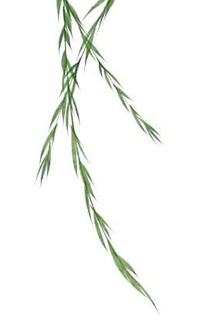
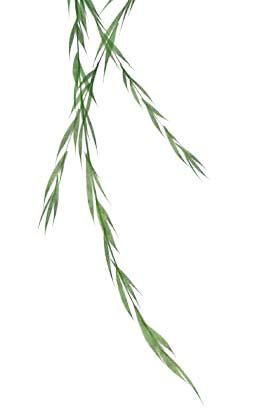
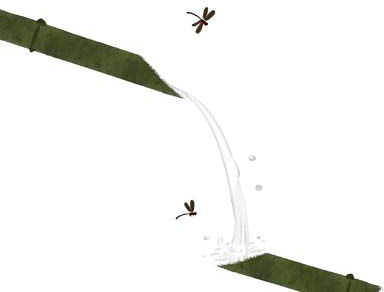
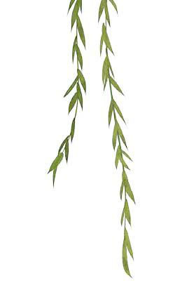

白云守端禅师有一次与师父杨岐方会禅师对会，杨岐问：“听说你从前的师父茶陵郁和尚大悟时说了一首偈，你还记得吗？”
“记得，记得，那首偈是：‘我有明珠一颗，久被尘劳关锁；一朝尘尽光生，照破山河万朵。’”白云毕恭毕敬地说，不免有些得意。
杨岐听了，大笑数声，一言不发地走了。
白云怔坐在当场，不知道师父听了自己的偈为什么大笑，心里非常愁闷，整天都思索着师父的笑，找不出任何足以令师父大笑的原因。那天晚上他辗转反侧，无法成眠，苦苦地参了一夜。第二天实在忍不住了，大清早就去请教师父：“师父听到郁和尚的偈为什么大笑呢？”
杨岐禅师笑得更开心，对着眼眶因失眠而发黑的弟子说：“原来你还比不上一个小丑，小丑不怕人笑，你却怕人笑！”白云听了，豁然开悟。
这真是个幽默的公案，参禅寻求自悟的禅师把自己的心思寄托在别人的一言一行，因为别人的一言一行而苦恼，真的还不如小丑能笑骂由他，言行自在，那么了生脱死，见性成佛，哪里可以得致呢？
杨岐方会禅师在追随石霜慈明禅师时，也和白云遭遇了同样的问题。有一次他在山路上遇见石霜，故意挡住去路，问道：“狭路相逢时如何？”石霜说：“你且躲避，我要到那里去！”
还有一次，石霜上堂的时候，杨岐问道：“幽鸟语喃喃，辞云入乱时如何？”石霜回答说：“我行荒草里，汝又入深村。”
这些无不都在说明，禅心的体悟是绝对自我的，即使亲如师徒父子也无法同行。就好像人人家里都有宝藏，师父只能指出宝藏的珍贵，却无法把宝藏赠予。杨岐禅师曾留下禅语：“心是根，法是尘，两种犹如镜上痕，痕垢尽时光始现，心法双亡性即真。”人人都有一面镜子，镜子与镜子间虽可互相照映，却是不能取代的。若把自己的喜怒哀乐寄托在别人的喜怒哀乐上，就永远在镜上抹痕，找不到光明落脚的地方。
在实际的人生里也是如此，我们常常会因为别人的一个眼神、一句笑谈、一个动作而心不安，甚至茶饭不思、睡不安枕。其实，这些眼神、笑谈、动作在很多时候都是没有意义的，我们之所以心为之动乱，只是由于我们在乎。万一双方都在乎，就会造成“狭路相逢”的局面了。
吾心似秋月
碧潭清皎洁
生活在风涛泪浪里的我们，要做到不畏人言人笑，确是非常不易，那是因为我们在人我对应的生活中寻找依赖，另一方面则又在依赖中寻找自尊，偏偏，“依赖”与“自尊”又充满了挣扎与矛盾，使我们不能彻底地有人格的统一。
我们时常在报纸的社会版上看到，或甚至在生活周遭的亲朋中遇见，许多自虐、自残、自杀的人，理由往往是：“我伤害自己，是为了让他痛苦一辈子。”这个简单的理由造成了许多人间的悲剧。然而更大的悲剧是，当我们自残的时候，那个“他”还是活得很好，即使真能使他痛苦，他的痛苦也会在时空中抚平，反而我们自残的伤痕一生一世也抹不掉。纵然情况完全合乎我们的预测，真使“他”一辈子痛苦，又于事何补呢？
可见，“我伤害我自己，是为了让他痛苦一辈子”，是多么天真无知的想法。因为别人的痛苦或欢乐是由别人主宰，而不是由我主宰，让别人痛苦而自我伤害，往往不一定使别人痛苦，却一定使自己落入不可自拔的深渊。反之，我的苦乐也应由我做主，若由别人主宰我的苦乐，那是蒙昧了心里的镜子，有如一个陀螺，因别人的绳索而转，转到力尽而止，如何对生命有智慧的观照呢？
认识自我、回归自我、反观自我、主掌自我，就成为智慧开启最重要的事。
小丑由于认识自我，不畏人笑，故能悲喜自在；成功者由于回归自我，可以不怕受伤，反败为胜；禅师由于反观自我如空明之镜，可以不染烟尘，直观世界。认识、回归、反观自我都是通向自己做主人的方法。
但自我的认识、回归、反观不是高傲的，也不是唯我独尊，而应该有包容的心与从容的生活。包容的心是知道即使没有我，世界一样会继续运行，时空也不会有一刻中断，这样可以让人谦卑。从容的生活是知道即使我再紧张、再迅速，也无法使地球停止一秒，那么何不以从容的态度来面对世界呢？唯有从容地生活才能让人自重。
佛教的经典与禅师的体悟，时常把心的状态称为“心水”或“明镜”，这有甚深微妙之意，但“包容的心”与“从容的生活”庶几近之，包容的心不是柔软如心水，从容的生活不是清明如镜吗？
水，可以用任何状态存在于世界，不管它被装在任何容器，都会与容器处于和谐统一，但它不会因容器是方的就变成方的，它无须争辩，却永远不损伤自己的本质，永远可以回归到无碍的状态。心若能持平清净如水，装在圆的或方的容器，甚至在溪河大海之中，又有什么损伤呢？
水可以包容一切，也可以被一切包容，因为水性永远不二。
但如水的心，要保持在温暖的状态才可启用，心若寒冷，则结成冰，可以割裂皮肉，甚至冻结世界。心若燥热，则化成烟气消逝，不能再觅，甚至烫伤自己，燃烧世界。
如水的心也要保持在清净与平和的状态才能有益，若化为大洪、巨瀑、狂浪，则会在汹涌中迷失自我，及至伤害世界。
我们在现实生活中所以会遭遇苦痛，正是无法认识心的实相，无法恒久保持温暖与平静，我们被炽热的情绪燃烧时，就化成贪婪、嗔恨、愚痴的烟气，看不见自己的方向；我们被冷酷的情感冻结时，就凝成傲慢、怀疑、自怜的冰块，不能用来洗涤受伤的创口了。
禅的伟大正在这里，它不否定现实的一切冰冻、燃烧、澎湃，而是开启我们的本质，教导我们认识心水的实相，心水的如如之状，并保持这“第一义”的本质，不因现实的寒冷、人生的热恼、生活的波动，而忘失自我的温暖与清净。
镜，也是一样的。
一面清明的镜子，不论是最美丽的玫瑰花或是丑陋的屎尿，都会显出清楚明确的样貌；不论是悠忽缥缈的白云或平静恒久的绿野，也都能自在扮演它的状态。
可是，如果镜子脏了，它照出的一切都是脏的，一旦镜子破碎了，它就完全失去觉照的功能。肮脏的镜子就好像品格低劣的人，所见到的世界都与他一样卑劣；破碎的镜子就如同心性狂乱的疯子，他见到的世界因自己的分裂而无法启用了。
禅的伟大也在这里，它并不教导我们把屎尿看成玫瑰花，而是教我们把屎尿看成屎尿、玫瑰看成玫瑰。它既不否定卑劣的人格，也不排斥狂乱的身心，而是教导卑劣者擦拭自我的尘埃，转成清明，以及指引狂乱者回归自我，有完整的观照。
水与镜子是相似的东西，平静的水有镜子的功能，清明的镜子与水一样晶莹，水中之月与镜中之月不是同样的月之幻影吗？
禅心其实就在告诉我们，人间的一切喜乐我们要看清，生命的苦难我们也该承受，因为在终极之境，喜乐是映在镜中的微笑，苦难是水面偶尔飞过的鸟影。流过空中的鸟影令人怅然，镜子里的笑痕令人回味，却只是偶然的一次投影呀！
唐朝的光宅慧忠禅师，因为修行甚深微妙，被唐肃宗迎入京都，待以师礼，朝野都尊敬为国师。
有一天，当朝的大臣鱼朝恩来拜见国师，问曰：“何者是无明，无明从何起？”
慧忠国师不客气地说：“佛法衰相今现，奴也解问佛法！”（佛法快要衰败了，像你这样的人也懂得问佛法！）
鱼朝恩从未受过这样的屈辱，立刻勃然变色，正要发作，国师说：“此是无明，无明从此起。”（这就是蒙蔽心性的无明，心性的蒙蔽就是这样开始的。）
鱼朝恩当即有省，从此对慧忠国师更为钦敬。
正是如此，任何一个外在因缘而使我们波动都是无明，如果能止息外在所带来的内心波动，则无明即止，心也就清明了。
大慧宗杲禅师也有一个类似的故事。有一天，一位将军来拜见他，对他说：“等我回家把习气除尽了，再来随师父出家参禅。”
大慧禅师一言不发，只是微笑。
过了几天，将军果然又来拜见，说：“师父，我已经除去习气，要来出家参禅了。”
大慧禅师说：“缘何起得早，妻与他人眠？”（你怎么起得这么早，让妻子在家里和别人睡觉呢？）
将军大怒：“何方僧秃子，焉敢乱开言！”
禅师大笑，说：“你要出家参禅，还早呢！”
可见要做到真心休寂，衰乐不动，不为外境言语流转迁动是多么不易。我们被外境的迁动就有如对着空中撒网，必然是空手而出，空手而回，只是感到人间徒然，空叹人心不古，世态炎凉罢了。禅师，以及他们留下的经典，都告诉我们本然的真性如澄水、如明镜、如月亮，我们几时见过大海被责骂而还口，明镜被称赞而欢喜，月亮被歌颂而改变呢？大海若能为人所动，就不会如此辽阔；明镜若能被人刺激，就不会这样干净；月亮若能随人而转，就不会那样温柔遍照了。
两袖一甩，清风明月；仰天一笑，快意平生；布履一双，山河自在；我有明珠一颗，照破山河万朵……这些都是禅师的境界，我们虽不能至，心向往之，如果可以在生活中多留一些自己给自己，不要千丝万缕地被别人牵动，在觉性明朗的那一刻，或也能看见般若之花的开放。
历代禅师中最不修边幅，不在意别人眼目的就是寒山、拾得，寒山有一首诗说：
吾心似秋月，
碧潭清皎洁；
无物堪比伦，
更与何人说！
明月为云所遮，我知明月犹在云层深处；碧潭在无声的黑夜中虽不能见，我知潭水仍清。那是由于我知道明月与碧潭平常的样子，在心的清明也是如此。
可叹的是，我要用什么语言才说得清楚呢？寒山大师在很久很久以前就有这样清澈动人的叹息了！
有一年，我在武陵农场打工，为果农收获水蜜桃与水梨。那时候是冬天，清晨起来要换上厚重的棉衣，因为山中的空气格外有一种清澈的冷，深深呼吸时，凉沁的空气就涨满了整个胸肺。
我住在农人的仓库里，清晨挑起箩筐到果园子里去，薄雾正在果树间流动，等待太阳出来时再往山边散去。在薄雾中，由于枝丫间的叶子稀疏，可以清楚地看见那些饱满圆熟的果实，从雾里浮现出来，青鲜的、还挂着夜之露水的果子，如同刚洗过一个干净的澡。
雾掠过果树，像一条广大的河流般，这时阳光正巧洒下满地的金线，果实的颜色露出来了，梨子透明一般，几乎能看见表皮内部的水分。成熟的水蜜桃有一种粉状的红，在绿色的背景中，那微微的红，如鸡心石一样，流动着一棵树的血液。
我最喜欢清晨曦光初现的时刻。那时，一天的劳动刚要开始，心里感觉到要开始劳动的喜悦，而且面对一片昨天采摘时还青涩的果子，经过夜的洗礼，竟已成熟了，可以深切地感觉到生命的跃动，知道每一株果树全都有着使果子成长的力量。我小心地将水蜜桃采下，放在已铺满软纸的箩筐里，手里能感觉到水蜜桃的重量，以及那充满甜水的内部质地。捧在手中的水蜜桃，虽已离开了它的树枝，却像一株果树的心。
采摘水蜜桃和梨子原不是粗重的工作，可是到了中午，全身几乎已经汗湿，中午冬日的暖阳使人不得不脱去外面的棉衣。这样轻微的劳作，为何会让人汗流浃背呢？有时我这样想着。后来找到的原因是：水蜜桃与水梨虽不粗重，但它们那样容易受伤，非得全神贯注不可——全神贯注也算是我们对大地生养的果实应有的一种尊重吧！
才一个月的时间，我们差不多把果园中的果实完全采尽了，工人们全部放工，转回山下，我却爱上了那里的水土，经过果园主人的准许，我可以在仓库里一直住到春天。能够在山上过冬是我意想不到的，那时候我早已从学校毕业，正等待着服兵役的征集令，由于无事，心情差不多放松下来了。我向附近的人借到一副钓具，空闲的时候，就坐客运车到雾社的碧湖去徜徉一天，偶尔能钓到几条小鱼，通常只是饱览了风景。
有时候我坐车到庐山去洗温泉，然后在温泉岩石上晒一个下午的太阳；有时候则到比较近的梨山，在小街上散步，看那些远远从山下爬上来赏冬景的游客。夜间一个人在仓库里，生起小小的煤炉，饮一壶烧酒，然后躺在床上，细细地听着窗外山风吹过林木的声音，深深觉得自己是完全自由的人，是在自然中与大地上工作过、静心等候春天的人。
采摘过的果园并不因此就放了假，果园主人还是每天到园子里去，做一些整理剪枝除草的工作，尤其是剪枝，需要长期的经验与技术，听说光是剪枝一项，就会影响明年的收成。我的四处游历告一段落，有一天到园子去帮忙整理，我所见的园中景象令我大大吃惊。因为就在一个月前曾结满累累果实的园子，这时全像枯萎了一般，不但没有了果实，连过去挂在枝干尾端的叶子也都凋落净尽，只有一两株果树上，还留着一片焦黄的、在风中颤抖着随时要落在地上的黄叶。
我只能看到树的外观
不能了解树的心情
就像我从树身上知道了春的信息
但我并不完全了解春天
园中的落叶几乎铺满地，走在上面窸窣有声，每一步都把落叶踩裂，碎在泥地上。我并不是不知道冬天的树叶会落尽的道理，但是对于生长在南部的孩子，树总是常绿的，看到一片枯树反而觉得有些反常。
我静静地立在园中，环目四顾，看那些我曾为它们的生命、为它们的果实而感动过的果树，如今充满了肃杀之气，我不禁在心中轻轻叹息起来。同样的阳光、同样的雾，却洒在不同的景象之上。
曾经雇用过我的主人，不能明白我的感伤，走过来拍我的肩，说：“怎么了？站在这里发呆？”
“真没想到才几天的工夫，叶子全落尽了。”我说。
“当然了，今年不落尽叶子，明年就长不出新叶；没有新叶，果子不知道要长在哪里呢！”园主人说。
然后他带领我在园中穿梭，手里拿着一把利剪，告诉我如何剪除那些已经没有生长力的树枝。他说那是一种割舍，因为长得太密的枝丫，明年固然能结出许多果子，但一棵果树的力量是有限的，太多的树枝可能结出太多的果，却会使所有的果都长得不好，经过剪除，就能大致把握明年的果实。我虽然感觉到那对一棵树的完整有伤害，但作为一棵果树，不就是为了结果吗？为了结出更好的果，母株总要有所牺牲。
我看到有些拇指粗细的枝丫被剪落，还流着白色的汁液，说：“如果不剪枝呢？”
园主人说：“你看过山地里野生的芭乐吗？它的果子一年比一年小，等到树枝长得过盛，根本就不能结果了。”
我们在果园里忙碌地剪枝除草，全是为了明年的春天做准备。春天，在冬日的冷风中，感觉像是十分遥远的日子，但是拔草的时候，看到那些在冬天也顽强抽芽的小草，似乎春天就在那深深的土地里，随时等候着涌冒出来。
果然，我们等到了春天。
其实说是春天还嫌早，因为气温仍然冰冷一如前日。我去园子的时候，发现果树像约定好的一样，几乎都抽出绒毛一样的绿芽，那些绒绒的绿昨夜刚从母亲的枝干挣脱出来，初面人世，每一片都绿得像透明的绿水晶，抖颤地睁开了眼睛。我尤其看到初剪枝的地方，芽抽得特别早，也特别鲜明，仿佛是在补偿着母亲的阵痛。我在果树前深深地受到了感动，好像我也感觉了那抽芽的心情。那是一种春天的心情，只有在最深的土地中才能探知。
我无法抑制心中的兴奋与感动，每天第一件事就是跑去园子，看那些喧哗的芽一片片长成绿色的叶子，并且有的还长出嫩绿的枝丫，逐渐在野风中转成褐色。有时候，我一天去看好几次，感觉在黄昏的落日里，叶子长得比黎明时要大得多。那是一种奇妙的观察，确实能知道春天的信息。春天原来是无形的，可是借着树上的叶、草上的花，我们竟能真切地触摸到春天——冬天与春天不是像天上的两颗星那样遥远，而是同一株树上的两片叶子，那样密切地跨步走。
我离开农场的时候，春阳和煦，人也能感觉到春天的触摸。园子里的果树也差不多长出一整树的叶子，但是有两株果树却没有发出新芽，枝丫枯干，一碰就断落，它们已经在冬天里枯干了。
果园的主人告诉我，每一年，过了冬季，总有一些果树就那样死去了，有时连当年结过好果实的树也不例外。他也想不出什么原因，只说：“果树和人一样，也有寿命，短寿的可能未长果就夭折，有的活了五年，有的活了十几年，真是说不准。奇怪的是，果树的死亡没有什么征兆，有的明明果子长得好好的，却就那样死去了……”
“真奇怪，这些果树是同时播种，长在同一片土地上，受到相同的照顾，品种也都一样，为什么有的冬天以后就活不过来了呢？”我问着。
我们都不能解开这个谜题，站在树前互相对望。夜里，我为这个问题而想得失眠了。果树在冬天落尽叶子，为何有的在春天不能复活呢？园子里的果树都还年轻，不应该这样就死去！
“是不是有的果树不是不能复活，而是不肯活下去呢？就像一些人失去了生的意志而自杀了？或者说，在春天里发芽也要心情，那些强悍的树被剪枝，就用发芽来补偿，而比较柔弱的树被剪枝，则伤心地失去了春天的期待与心情。树，是不是有心情的呢？”我这样反复地询问自己，知道难以找到答案，因为我只能看到树的外观，不能了解树的心情。就像我从树身上知道了春的信息，但我并不完全了解春天。
我想到，人世里的波折其实也和果树一样。有时候我们面临冬天的肃杀，却还要被剪去枝丫，甚至流下了心里的汁液。那些懦弱的人，就不能等到春天，只有永远保持春天的心情等待发芽的人，才能勇敢地过冬，才能在流血之后还能满树繁叶，然后结出比剪枝以前更好的果实。
多年以来，我心中时常浮现出那两株枯死的水蜜桃树，尤其是受到无情的波折与打击时，那两株原本无关紧要的桃树，它们的枯枝就像两座生铁的雕塑，从我的心房中撑举出来，我对自己说：“跨过去，春天不远了，我永远不要失去发芽的心情。”果然，我就不会被冬寒与剪枝击败，虽然有时静夜想想，也会黯然流下泪来，但那些泪，在一个新的春天来临时，往往成为最好的肥料。
在我们家乡有一句话，叫“菜瓜藤，肉豆须，分不清”，意思是丝瓜的藤蔓与肉豆的茎须一旦纠缠在一起，是无法分辨的。
因此，像兄弟分家产的时候，夫妻离婚的时候，有许多细节部分是无法处理的，老一辈的人就会说：“菜瓜藤与肉豆须，分不清呀！”还有，当一个人有很多亲戚朋友，社会关系异常复杂的时候，也可以用这一句来形容。以及一个人在过程中纠缠不清，甚至看不清结局之际，也可以用这一句来形容。
住在都市的人很难理解到这九个字的奥妙，因为他们没有机会看到丝瓜与肉豆藤须缠绵的样子。乡下人谈到人事难以理清的真实情境，一提到这句话都会不禁莞尔，因为丝瓜与肉豆在乡间是最平凡的植物，几乎家家都有种植。我幼年时代，院子的棚架下就种了许多丝瓜和肉豆，看到它们纠结错综，常常会令我惊异，真的是肉眼难辨，现在回想起来，感觉到现代人复杂难以理清的人际关系，确实像这两种植物藤蔓的纠缠，想找到丝瓜与肉豆的根与果是不难的，但要在生长的过程分辨就非常困难了。
有一次我发了笨心，想要彻底地分辨两者的不同，却把丝瓜和肉豆的茎叶都扯断了。父亲看见了觉得很好笑，就对我说：“即使你能分辨这两株植物又有什么意义呢？你只要在它们的根部浇水施肥，好好地照顾它们长大，等到丝瓜和肉豆长出来，摘下来吃就好了。丝瓜和肉豆都是种来食用的，不是种来分辨的呀！”
父亲的话给我很好的启示，在人生一切关系的对应上也是如此，一个人只要站稳脚跟，努力地向上生长，有时不免和别人纠缠，又有什么要紧呢？不忘失自己的立场与尊严，最后就会结出果实来，当果实结成的时刻，一切的纠缠就不重要了。
另外一个启示就是自然，万事万物都有其自然的法则，依循这自然的发展，常常回头看看自己的脚跟，才是生命成长正常的态度。种什么样的因会结出什么样的果，是必然的，丝瓜虽与肉豆无法分辨，但丝瓜是丝瓜，肉豆是肉豆，这是永远不会变的，我们能做的就是让丝瓜长出好的丝瓜，让肉豆结出肥硕的肉豆！
丝瓜是依自然之序而生长结果，红花是这样红的，绿叶也是这样绿的，没有人能断绝自然而超越地活在世界，所以禅师说，“不雨花犹落，无风絮自飞”，花与絮的飞落不必因为风雨，而是它已进入了生命的时序。
不雨花犹落
无风絮自飞
日本的道元禅师到中国习禅归国后，许多人问他学到了什么，他说：“我已真正领悟到眼睛是横着长、鼻子是竖着长的道理，所以我空着手回来。”
听到的人无不大笑，但是立刻他们的笑声都冻结了，因为他们之中没有人知道为何鼻子竖着长而眼睛横着长，这使我们知道，禅心就是自然之心，没有经过人生庄严地历练，是无法领会其中真谛的呀！
楼兰，是中国北方一个最神秘的国度。
因为它在汉朝以前就发展出非常伟大的文明，它介于中国与大宛国之间，国力十分强盛。汉武帝派遣大使到大宛去，常常被楼兰挡道，甚至击杀，即使强悍如汉武帝，对这个远在边塞的强国也莫可奈何。
这样一个武功文治都强大的国家，它的地点在今天新疆维吾尔自治区的东南戈壁，一直到隋唐，历史上都还记载楼兰的种种。可是有一天，楼兰国却完全在沙漠中消失，消失的原因是被狂大的沙漠风暴所掩埋。它消失的时间却是一个历史的大谜题，只知道唐朝以后再也没有人见过楼兰古国了，对该国的文明也完全无知。
直到清朝光绪年间以后，探险家、考古家才开始挖掘出楼兰的废墟，并在其中找到铜器、陶片、用具、织物、雕刻木器、书简等遗物。人们才知道，原来早在汉朝以前，楼兰已经是高度文明的国家，它的文明甚至不逊于中国。
大陆的考古队曾在楼兰遗址挖出一具震惊世界的女尸。这具女尸只是随便地埋在沙漠里，历经千余年却还保存完好，金黄色的头发还有光泽，脸部轮廓清晰，据说她的皮肤还有弹性，而胃部还有未消化完的食物。我们从这具女尸看出，楼兰国的种族，连长相都和中国人不同。
这具女尸，据考证的结果，她死时还非常年轻。她身上穿的衣服、头上戴的帽子都十分讲究。有考古学家说，她可能还是个新娘……至于她是怎么死的，是在楼兰消失前死的？或是在楼兰国被黄沙埋没那时刻消失了生命？则不得而知。
我看过杂志报道的图片，也看过纪录电影中的楼兰女尸，当时曾令我相当悲哀。如果她真是一个新娘，却在新婚之夜，整个国家被沙土埋没，那是她在最黄金的年代里遇到的最暗淡可怖的事件。可惜，楼兰国所在地始终没有再发现别的完整尸体，当然也没有她的丈夫，我的悲哀只是个人的玄想罢了。
说到楼兰的玄想，由于它在中国历史的记载中，如谜一样开始，也如谜一样消失，才成为近代武侠小说作家经常玄想的题材。从武侠小说中得来的想象是，楼兰国的男人总是挺拔而有超凡的武功，女人总是秀美而温顺，它的宫廷和中国一样，有雄伟的建筑，人人穿着华丽的盛服。
这也只是武侠作家心中的楼兰，著名武侠小说家古龙就在他的名作《楚留香系列》中有过惊人的抒情描写。至于真实的楼兰情况是无人能知的，连“楼兰新娘”都无法给我们一点回答。我想，真正的楼兰可能没有小说中那样美，却由于它的早夭，给我们留下无限的想象天地；也因为它身处大漠，它的消失确实给了我们一种悲壮的感情。
楼兰的影响不仅及至武侠小说家，一般民间也留下许多传说，这些传说使楼兰不至于完全消失于大漠，成为它在人们心中留下的证据。
近读陈斯英先生著的《西北万里行》一书，中间有一段关于楼兰的传说，极有趣味。陈先生是在旅居乌鲁木齐期间听到这个传说的，并用生动的笔触将它记载了下来。
据说楼兰城内有一位外来的教师，由于为人仁慈慷慨，深为当地人敬重爱戴。有一天黄昏来了一位道士模样的老人，告诉他：“本城今夜将有大风来袭，你闻到风声，应立即走出门外，到那根竖立在空地中央的旗杆前，闭上眼睛，环绕旗杆疾走，不可稍停，必须等到风止之后，才可睁开眼睛，千万记住。”老人说完话，便匆匆辞去。
到午夜时分，外面果然刮起强风，来势甚猛，声如雷鸣。他急速走出屋外，直奔旗杆前，绕着旗杆闭目疾走，但觉狂风挟着沙粒，一阵阵不断袭来，使他感到像在一片波涛中浮沉飘荡。
不知道过了多少时间，他因疲乏而不能疾走，幸好风势也减弱了，他举步维艰，终于昏倒过去。当阳光把他晒醒的时候，他发现自己躺在一片黄沙上，四野寂然，整个楼兰已消失无踪，只剩一片苍莽荒漠。
最初，他以为只是被狂风吹到另一个沙漠，及至发现身旁一根两三尺的木桩，原来是昨夜他绕着疾走的高达二三十尺的旗杆，他才相信楼兰国和所有人民已经和旗杆底部被一起埋进流沙之中，他自己因为一直绕旗杆疾走，始终站在风沙上，才没被淹没。这个传说的结尾是，楼兰的那个教师向库鲁克山脉走去，在途中的一处绿洲获救，才说出楼兰国灭亡的经过。
读完这个传说，我掩卷长叹。一个强大的国家在大自然的威力下，存亡竟只在一夕之间，只留下一个凄凉的传奇故事，虽然这个传奇还是颇可置疑的。
我想起十六世纪在荷兰，有一个城市叫安特威普（Antwerp），它最繁盛的时候，全市有七十八个屠夫、一百六十九个面包师，却有三百多个专业画家，是最兴盛的艺术之都。可是它莫名其妙地消失了，只留下一个城的名字和少数记载，连艺术都未能留下。可惜那些画家没有人能得仙人指示，也没有沙漠中的旗杆，未能幸存。
楼兰的传说，经过历史洗礼后有一种凄然的美，但也不能为楼兰证明什么，只证明它灭亡的快速。其实，一个国家，一个时代，一个人，在时空中的生命何其短促！
生命的路有时真像沙漠中无涯的黄沙，旗杆是沙漠中的理想，一个唯一可以凭借的事物。如果生命能绕着一个不动的理想疾走，终可以走出一条生路的吧！——楼兰如谜，它留下的传奇，却给我这样新的启示。
改变表相最好的方法
不是在表象上下功夫
一定要从内在里改革
|  |
我认识一位化妆师。她是真正懂得化妆，而又以化妆闻名的。对于这生活在与我完全不同领域的人，我增添了几分好奇，因为在我的印象里，化妆再有学问，也只是在皮相上用功，实在不是有智慧的人所应追求的。
因此，我忍不住问她：“你研究化妆这么多年，到底什么样的人才算会化妆？化妆的最高境界到底是什么？”
对于这样的问题，这位年华已逐渐老去的化妆师露出一个深深的微笑，她说：“化妆的最高境界可以用两个字形容，就是‘自然’。最高明的化妆术，是经过非常考究的化妆，让人家看起来好像没有化过妆一样，并且这化出来的妆与主人的身份匹配，能自然表现那个人的个性与气质。次级的化妆是把人突显出来，让她醒目，引起众人的注意。拙劣的化妆是一站出来别人就发现她化了很浓的妆，而这层妆是为了掩盖自己的缺点或年龄的。最坏的一种化妆，是化过妆以后扭曲了自己的个性，又失去了五官的协调，例如小眼睛的人竟化了浓眉，大脸蛋的人竟化了白脸，阔嘴的人竟化了红唇……”
没想到，化妆的最高境界竟是无妆、竟是自然，这可使我刮目相看了。
化妆师看我听得出神，继续说：“这不就像你们写文章一样？拙劣的文章常常是词句的堆砌，扭曲了作者的个性。好一点的文章是光芒四射，吸引了人的视线，但别人知道你是在写文章。最好的文章，是作家自然的流露。他不堆砌，读的时候不觉得是在读文章，而是在读一个生命。”
多么有智慧的人呀！可是，“到底做化妆的人只是在表皮上做功夫呀！”我感叹地说。
“不对的，”化妆师说，“化妆只是最末的一个枝节，它能改变的事实很少。深一层的化妆是改变体质，让一个人改变生活方式、睡眠充足、注意运动与营养，这样她的皮肤改善、精神充足，比化妆有效得多。再深一层的化妆是改变气质，多读书、多欣赏艺术、多思考、对生活乐观、对生命有信心、心地善良、关怀别人、自爱而有尊严，这样的人就是不化妆也丑不到哪里去，脸上的化妆只是化妆最后的一件小事。我用三句简单的话来说明：三流的化妆是脸上的化妆，二流的化妆是精神的化妆，一流的化妆是生命的化妆。”
化妆师接着做了这样的结论：“你们写文章的人不也是化妆师吗？三流的文章是文字的化妆，二流的文章是精神的化妆，一流的文章是生命的化妆。这样，你懂化妆了吗？”
我为了这位女性化妆师的智慧而起立向她致敬，深为我最初对化妆师的观点感到惭愧。
告别了化妆师，回家的路上我走在夜黑的地表，有了这样深刻的体悟：这个世界一切的表相都不是独立自存的，一定有它深刻的内在意义，那么，改变表相最好的方法，不是在表相上下功夫，一定要从内在改革。
可惜，在表相上用功的人往往不明白这个道理。
有时候我在想，人的思想究竟像什么呢？有没有一种具体形象的事物可以来形容我们的思想？
偶尔，我觉得思想像彩色的蝴蝶，在盛开的花园中采蜜，但取其味，不损色香，而这蝴蝶不能在我们预设的花园中飞翔，它随风翻转，停在一些我们不能考察的花丛中，甚至让我觉得，那蝴蝶停下来时有如一枝花。
偶尔，我觉得思想犹如海洋，广度与深度都不可探测，在它涌动的时候，或者平缓如波浪，或者飞溅如海啸，或者反映蓝天与星光。只是，思想在某些时候会有莫名的力量，那像渔汛或暖流、黑潮从未知的北方来到，那可能就是被称为“灵感”的东西。
偶尔，我觉得思想像《诗经》中说的“鸢飞戾天，鱼跃于渊”中的鸢或是鱼，上及飞鸟下至渊鱼，无不充满了生命力，无不欢欣悦怡、德教明察。鸢鸟的眼睛是最锐利的，可以在一千米以上的高空，看见茂盛草原中奔跑的一只小鼠；鱼的眼睛则永远不闭，那是由于海中充满凶险，要随时改变位置。
不过，蝴蝶的翅力太弱，生命也太短暂；而海洋则过于博大，不能主宰；鸢呢？鸢太过强猛，欠缺温柔的性质；鱼则过于惊慌，因本能而生活。
思想如果愿意给一个形象，我愿自己的思想像天鹅一样。天鹅的古名叫鹄，是吉祥的鸟，是“燕雀安知鸿鹄之志”中那种两翼张开有六尺长的大鸟。它生长于酷寒的北方，能顺着一定的轨迹，越过高山大河到达南方的温暖之地。它既善于飞翔，也善于游泳；它性情温和，而意态优雅；它善知合群，能互相守望；它颜色分明，非白即黑；它能安于环境，不致过分执着……天鹅有许多好的品性，它的耐力、毅力与气质，都是令人倾倒的。芭蕾舞剧《天鹅湖》中，对情感至死不渝的天鹅，不知道使多少人为之动容。
我愿意自己的思想浩大如天鹅之越过长空，在动荡迁徙的道路上，不失去温和与优雅的气质。更要紧的是，天鹅是易于驯养的，使我不至于被思想牵动，而能主引自己的思想，让它在水草丰美的湖滨自在优游。
据说，驯养天鹅有两个方法：一个是把天鹅的一边翅膀修掉，使它失去平衡不能起飞，它就会安住于湖边；另一个方法是，把天鹅养在一个较小的池塘里，由于天鹅的起飞，必须先在水中滑翔一段路途，才能凌空而去，若池塘太小，它滑翔的路程太短就不能起飞了。从前，欧洲的动物园用前一个方法驯养天鹅，后来觉得残忍，并且展翅的时候丑陋，现在都用后面的方法。
驯养思想的天鹅似乎不必如此，而是确立一个水草丰美的湖泊作为天鹅的家乡，让它既保有平衡的双翼（智慧与悲悯），也让它有广大的湖泊（清白的自性），然后就放心地让它展翅翱翔吧！只要我们知道天鹅是季候之鸟，不管它飞到哪里，它在心灵中永远不会忘记自己的家乡。经过数万里时空，在千灾万劫里流浪之后，有一天，它就会飞回它的家乡。
传说从前科举时代有一段时间，凡是到京城应试的士子都要穿“鹄袍”，译成白话就是要穿“天鹅服”，执事的人只要看见穿白袍的人就会肃然起敬。因为那些穿着白衣的年轻孩子，将来会有许多位至公卿，是不可轻视的。佛教把居士称为“白衣”，称为“素”，也是这个意思。
思想的天鹅也像身穿白袍的士子，纯洁、青春，充满了对将来的热望，在起飞的那一刻不能轻视，因为它会万里翱翔，主宰人的一生。
在我的清明之湖泊，有一只时常起飞的天鹅，我看它凌空而去，用敏锐的眼睛看着世界，心里充满对生命探索的无限热忱。我让那只天鹅起飞，心里一点不操心，因为我知道天鹅有一个家乡，它的远途旅行只是偶然的栖息，它总会飞回来，并以一种优雅温柔的姿势，在湖中降落。
我的人生几乎是从最底层出发的。我生长在一个几乎没有文化和文明的地方，而且家庭十分贫困。我没有读过什么好的学校，学校里老师的经验也都很不足，就像教我们英文的老师，其实他只是受了几个月的短训就上岗了。但这没有妨碍我们的成长。
这个老师教我们用汉字来记住英文单词，“土堆”就是today，“也是土堆”是yesterday，而tomorrow就理所应当地变成了“土马路”。于是，我记住了这些单词，还明白了一个道理：“今天是土堆没关系，昨天是土堆也没关系，只要明天能成为一条土马路就行。”
十七岁那年，我决定离开家乡。临行前，妈妈送了我一样东西，一个玻璃的瓶子，里面装着黑黑的东西。母亲说：“你别小看，这里面装了三样重要的东西，一样是拜祖先的香炉里的香灰，一样是农田里的土，还有一样是井里的水。闽南的祖先们在离开家乡的时候都会带着这个，说是带着这个去到别处就不会水土不服，而且有了它们，走到哪里，哪里就是你的家乡。”这个瓶子至今还摆在我的桌上，它让我明白了什么是家乡。
因为身上没钱，离家后的生活一度过得很苦。我曾经在餐馆当过服务生，做过码头工人，摆过地摊，还在洗衣店烫过衣服，甚至还杀过猪。杀完猪回到家，洗完手，就继续写作，变成作家。那会儿我十七岁，开始陆续发表作品，被一部分读者视为“天才”。
我一直坚持写作，希望能变成一个成功的作家。在我们那个地方几百年来没有出现过一个作家，我知道要实现自己的理想，一定要比别人更勤快。我从小学三年级时开始，规定自己每天写五百字，不管刮风下雨，心情好坏；到了中学，每天写一千字的文章；到了大学，每天写两千字的文章；大学毕业以后每天写三千字的文章；到现在已经四十年了，我每天还写三千字的文章。我还有个习惯，就是绝不废话，能三千字写完的，绝不会写成五千字，能五百字写完的绝不会变成一千字。
在我生长的年代，要当作家很难，因为稿费很少。为了生存，我开始去报社上班。和当时的所有年轻人一样，我渴望成功，希望得到名利、金钱、影响力。我工作很卖力，因而很快就升迁，第六年就当了总编辑，同时还在报纸上写十八个专栏，主持节目当电视公司的经理，还做了广播节目《林清玄时间》，一时风头无两，成为大众眼中成功的人。到如今，我一共写了一百七十几本书，摆起来比我的身高还高。
人生不过就是这样
追求成为一个更好的
更具有精神和灵气的自己
|  |
我以为，成功应该很快乐，应该每天带着“神秘的微笑”。但事实上很难，因为每天从早到晚要开七八个会，还要和很多你不喜欢的人约会、应酬，到最后，生命的时间和空间被挤压，发现自己已经很难静下心来写一篇文章，而且幽默和浪漫精神不见了，对年轻时候向往的东西都失去了兴趣。
有一天，我在报馆里等待看样刊，无聊的时候就翻开了一本书，开篇第一句话说，“到了三十岁的时候，要把全部的时间用来觉悟。如果到了三十岁还没有用来觉悟，就会一步步走向死亡”。我当时很震惊，因为那会儿我已经过了三十岁了，却完全不知道觉悟是怎么回事。我开始思考什么是觉悟。不久之后，我辞掉了所有的工作，到山上去闭关，去清修和思考，开始走进佛教的世界，清修持续了三年，这也是为什么后来我的作品中有了很多关于宗教的元素。
三年后，我觉得自己已经有了很多领悟，明白“觉”是“学习看见”，“悟”是“我的心”，所谓“觉悟”就是“学习看见我的心”，因为心恋红尘，我决定下山。
在山下路过一个水果摊，我想买点水果，当时老板不在，我便在边上等，这时候一个路人过来，问我水果怎么卖，将我误认为老板。我当时的第一反应是“我经过了三年修行，大家竟然看不出来我很有智慧”，随即我就意识到，觉悟修行并不会改变人的相貌，只是内心起了革命。
之所以讲觉悟，是因为现代社会很多人看不到自己的心。我们把生活分成两部分，一部分是重要的生活，一部分是紧急的生活，会发现很多人都在紧急地生活，随波逐流，而不是重要的生活。
什么是重要的生活？陪着爱人散步，躺在草地上看星星，一个小孩有没有幽默感，懂不懂得爱和宽容，这些是重要的。而每天着急上班、学习、考试，是紧急的。当人整天在紧急的事情里面打转的时候，“琴棋书画诗酒花”就会变成“柴米油盐酱醋茶”，要学会腾出一些空间，进入“重要的生活”。
两三年前，台湾有个最有钱的博士，叫王永庆，他九十二岁那年在美国巡视工厂的时候去世了。我听到消息很难过，我想如果我九十岁有五千亿财产，我会去巡视工厂吗？答案是一定不会。王永庆的后人迄今还在为财产争夺不休，这是一件很让人伤心的事，因为他们没有觉察到什么才是重要的生活。
还有一个富翁叫郭台铭，虽然他有很多财产，但他最后娶了一个平凡的舞蹈老师。我问他，你为什么会选她？他回答我说，我太太最大的优点是她身上闻不到钱的味道。这表明，对于一个整天追逐金钱的人来说，没有钱的味道反而是最大的优点，意味着这个人并没有掉进欲望的泥沼。
一、要尽可能地把所有时间和空间都留给那些重要的事情
历史上有一个很了不起的人，叫陆羽。他是一个弃儿，长大后，他给自己取了“陆羽”的名字，意思是漂流在陆地上的一根羽毛。他立志要喝遍天下的茶，饮遍天下的水，于是从九岁开始就一直旅行。我后来曾追随他的饮茶之路去寻访，深刻地体会到了他的不容易，全国的茶区那么多，在只依靠步行的年代，他都一一走遍，还写下了《茶经》，成为迄今无人超越的经典。支撑他的，就是一股叫作梦想的力量，他懂得有限的人生里什么是重要的事情。
二、你必须要意识到世俗的事务并非无价
什么是无价的？是浪漫的精神。有一次我去上海演讲，和朋友站在黄浦江边吹风，觉得夜晚的黄浦江格外的美，十分浪漫。此时，我的同伴撞了我一下，“喂，你知道每年黄浦江有多少人自杀吗？”哈，真是煞风景。
什么是浪漫？“浪费时间慢慢吃饭，浪费时间慢慢走路，浪费时间慢慢喝茶……这些都是浪漫”，浪漫其实就是创造一种时空、一种感受、一种向往、一种理想，在你的世俗土地上开出一朵玫瑰花。
即便是被世俗捆绑，即便是处于人生低谷，也要时刻保持浪漫精神。求婚也并不一定需要房子、车子、票子以及很大的钻戒，我只是写了“纵使才名冠江东，生生世世与君同”两句诗，妻子就感动异常，嫁给了我。
三、不要失去对真实价值的认知
现代社会，很多人对价值的认知已经不那么清楚。
有一次，我在上海路过一家百货商店，看见橱窗里挂着一个包，售价一百万元人民币，那是爱马仕的鳄鱼皮包。我很吃惊，谁会花一百万买这个包呢？但显然是因为有人买才会销售。
很多人都被这些名牌捆绑和魅惑，在吃穿用度上，花很多钱来消费，但事实上，他们看中的并不是物品本身的价值，而是价格。我到商场里去买衣服，都会问服务员，有没有没牌子的东西？只有撕掉牌子，物件才会回归本身的价值。因为我希望寻找的是生命的价值。
我认识北京的一个有钱人，是个矿产大亨，每年赚一百多亿人民币。他家地面用的是玻璃，下面水池里养着锦鲤。这些锦鲤都经过标准的挑选，不合格的鱼会被拿去扔掉或给大鱼吃。
因为不符合某些标准，有些锦鲤一出生就被决定了凄惨的命运。后来，我把那些不合格的鱼买了回来，养出来也格外与众不同。人如果只认识统一的、固定的价值观，实际上是很可怜的。好在人不是锦鲤，就算出身卑微，也可以通过自己的努力，找到自己生命的价值。
四、要认识到这个世界是多元的而不是单一的
这个世界的可怕之处在于，大部分人被训练成单一的人，按照上学、考试、工作、结婚等标准流程活着。这很值得检讨。
你看看这个世界，最辣的是辣椒，最酸的是柠檬，最苦的是苦瓜，最甜的是甘蔗。如果你把它们养在一块土地上，会出现两种结果：全部死掉，或只有一种活下来。它们本来活在不同的土地上，有不同的成长经历，如果硬将它们放在一起，也许辣椒最后会变成苦瓜。
人需要发展自己的特质，但是也要包容别人的不同，这个世界才会精彩。因此家长也不要总拿自己的孩子和别人家的做比较，因为辣椒不需要和茄子比较，辣椒只要自己够辣就好。
人们从小就要发现，自己最合适做什么，做什么才最快乐。我这辈子一直想当作家，从来没有改变。清华大学百年校庆的时候，有学生问我，您已经写了一百七十多本书，还会接着写吗？我的回答是，如果我下午会死，我会写到今天早上，如果明天会死，我会写到明天早上。我已经写了四十多年，我一直在想，我最好的作品还没有写出来，我要一直努力。
如果你现在问我什么是成功，我会说，今天比昨天更慈悲、更智慧、更懂爱与宽容，就是一种成功，如果每天都成功，连在一起就是一个成功的人生。不管你从哪里来，要去往哪里，人生不过就是这样，追求成为一个更好的、更具有精神和灵气的自己。
憨山大师有一年冬天读《肇论》，对里面僧肇大师谈到的“旋岚偃岳而常静，江河竞注而不流”感到十分疑惑，心思惘然。
又读到书里的一段：有一位梵志从幼年出家，一直到白发苍苍才回到家乡，邻居问梵志说：“昔人犹在耶？”梵志说：“吾似昔人，非昔人也。”憨山豁然了悟，说：“信乎！诸法本无去来也！”
然后，他走下禅床礼佛，悟到无起动之相，揭开竹帘，站立在台阶上，忽然看见大风吹动庭院里的树，飞叶满空，却了无动相，他感慨地说：“这就是旋岚偃岳而常静呀！”又看到河中流水，了无流相，说：“此江河竞注而不流呀！”于是，去来生死的疑惑，从这时候起完全像冰雪融化一样，随手作了一首偈：
死生昼夜，水流花谢。
今日乃知，鼻孔向下。
我每一次想到憨山大师传记里的这一段，都会油然地感动不已，它似乎在冥冥中解释了时空岁月的答案。
表面上看，山上的旋岚、飘叶、云飞，是非常热闹的，但是山的本身却是那么安静——河中的水奔流不停，但是河的本质并没有什么改变。人的生死，宇宙的昼夜，水的奔流，花果的飘零，都像这样，是自然的进程罢了。
这就是为什么梵志白发回乡，对邻居说：“我像从前的梵志，却已经不是以前的梵志了。”
岁月在我们的身上，毫不留情地写下刻痕，在每一次揽镜自照的时候，都会慨然发现，我们的脸容苍老了，我们的白发增生了，我们的身材改变了，于是，不免要自问：“这是我吗？”这就是从前那一位才华洋溢、青春飞扬、对人世与未来充满热切追求的我吗？
这是我，因为每一步改变的历程，我都如实地经验，还记得自己的十岁、二十岁、三十岁，一步一步地变迁。
这也不是我，因为不论外貌、思想、语言都已经完全改变了。如果遇到三十年前的旧友，他可能完全不认得我，或许，我如果在街上遇见十岁时的自己，也会茫然地错身而过。
但愿所有的朋友
也能一起前行
在生命的流逝
在因缘的变换中
都能无畏
做不受惑的人
时空与我，在生命的历程上起着无限的变化，使我感到惘然。
那关于我的，到底是我吗？不是我吗？
有一次返乡，在我就读过的旗山国小大礼堂演讲，我的两个母校，旗山国民小学、旗山初中都派了学生来献花，说我是杰出的校友。
演讲完后，遇到了我的一些小学中学的老师，简直不敢与他们相认，因为他们都老得不是原来的样子。当时我就想，他们一定也有同样的感慨吧！没想到从前那个从来不穿鞋上学的毛孩子，现在已经步入中年了。
一位二十年没见的小学同学来看我，紧紧握着我的手说：“二十年没见，想不到你变得这么老了！”——他讲的是实话，我们是两面镜子，他看见我的老去，我也看到了他的白发，其中最荒谬的是，我们都确信眼前这完全改变的同学，是“昔日人”，也相信自己还是从前的我。
一位小学老师说：“没想到你变得这么会演讲呢！”
我想到，小时候我就很会演讲，只是国语不标准，因此永远没有机会站上讲台，不断挫折与压抑的结果，使我变得忧郁，每次上台说话就自卑得不得了，甚至脸红心跳说不出话来。
连我自己都不能想象，二十几年之后，我每年要做一百多次的大型演讲，当然，我的老师更不能想象的。
我不只是外貌彻底地改变了，性格、思想也不再是从前的自己。
但是，属于童年的我，却是旋岚偃岳、江河竞注，那样清晰、充满了动感。
今年过年的时候，在家里一张被弃置多年的书桌里，找到了我在童年、少年时代的一些照片，黑白的、泛着岁月的黄渍。
我坐在书桌前专注地寻索着那些早已在岁月之流中逝去的自己，瘦小、苍白，常常仰天看着远方。
那时在乡下的我们，一面在学校读书，一面帮忙家里的农事，对未来都有着茫然之感，只知道长大一定要到远方去奋斗，渴望有衣锦还乡的一天。
有一张照片后面，我写着：
男儿立志出乡关，
毕业无成誓不还。
那是初中三年级，后来我到台南读高中，大学考了好几次，有一段时间甚至灰心丧志，觉得天下之大，竟没有自己容身的地方。想到自己十五岁就离家了，少年迷茫，不知何往。
还有一张是高中一年级的，背后竟早熟地写道：
我是谁？
我从哪里来？
要往哪里去？
在人群里，谁认识我呢？
我看着那些照片，试图回到当时的情境，但情境已渺，不复可追。如果我不写说明，拿给不认识从前的我的朋友看，他们一定不能在人群里认出我来。
坐在地板上看那些照片，竟看到黄昏了，直到母亲跑上来说：“你在干什么呢？叫好几次吃晚饭，都没听见。”我说在看从前的照片。
“看从前的照片就会饱了吗？”母亲说，“快！下来吃晚饭。”
我醒过来，顺随母亲下楼吃晚饭，母亲说得对，这一顿晚饭比从前的照片重要得多。
这二十年来，我写了五十几本书，由于工作忙碌，很少回乡，哥哥姊姊竟都是在书里与我相见。
有一次，姊姊和我讨论书中的情节，说：“你真的经历过这些事吗？”
“是的。”我说。
“真想不到，我的同事都问我，你写的那些是不是真的，我说我也不知道呀！因为我的弟弟十五岁就离家了。”
有时候，我出国也没有通知家里的人。那时在《中国时报》当主编，时常到国外去出差，几乎走遍了半个地球。亲戚朋友偶尔会问：
“这写埃及的，是真的吗？”“这写意大利的，是真的吗？”
我的脸上并没有写过我到过的国家，我的眼里也无法映现生命那些私密经验的历程，因此，到后来连我自己也会问自己：“这些都是真的吗？”如果是假的，为什么如此真实？如果是真的，现在又在何处呢？生命的经验没有一段是真的，也没有一段是假的，回想起来，真的是如梦如幻，假的又是刻骨铭心，在走过了以后，真假只是一种认定呀！
有时候，不肯承认自己四十岁了，但现在的辈分又使我尴尬。
早就有人叫我“叔公”“舅公”“姨丈公”“姑丈公”了，一到做了公字辈，不认老也不行。
我是怎么突然就到了四十岁呢？
不是突然！生命的成长虽然有阶段性，每天却都是相连的，去日、今日与来日，是在喝茶、吃饭、睡觉之间流逝的，在流逝的时候并不特别警觉，但是每一个五年、十年就仿佛河流特别湍急，不免有所醒觉。
看着两岸的人、风景，如同无声的黑白默片，一格一格地显影、定影，终至灰白、消失。
无常之感在这时就格外惊心，缘起缘灭在沉默中，有如响雷。
生命会不会再有一个四十年呢？如果有，我能为下半段的生命奉献什么？
由于流逝的岁月，似我非我；未来的日子，也似我非我，只有善待每一个今朝，尽其在我珍惜的每一个因缘，并且深化、转化、净化自己的生命。
憨山大师觉悟到“旋岚偃岳而常静，江河竞注而不流”的时候，是二十九岁。想来惭愧，二十九岁的时候我在报馆里当主笔，旋岚乱动，江河散流，竟完全没有过觉悟的念头。
现在懂了一点点佛法、体验一些些无常、关照一丝丝缘起，才知道要做一个不受人惑的人是多么艰难。幸好，选到了一双叫“菩萨道”的鞋子，对路上的荆棘、坑洞，也能坦然微笑地迈步了。
记得胡适先生在四十岁时，曾在照片上自题“做了过河卒子，只好拼命向前”，我把它改动一下“看见彼岸消息，继续拼命向前”，来作为自己四十岁的自勉。
但愿所有的朋友，也能一起前行，在生命的流逝、在因缘的变换中，都能无畏，做不受惑的人。
心随境转是凡夫
境随心转是圣贤
用惭愧心看自己
用感恩心看世界
|  |  |